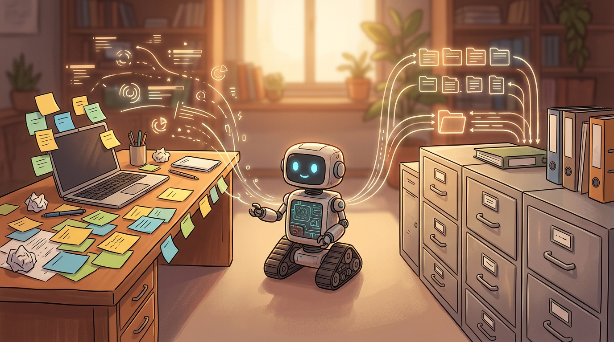

Todo mundo que já trabalhou com um agente de IA por mais de uma tarde conhece a cena. Você explica o projeto, combina como as coisas funcionam, e no dia seguinte ele age como se nunca tivesse te visto. Aí vem a tentação óbvia: então vou fazer ele lembrar de tudo. E é aí que muita gente se enrola. Lembrar de tudo não é o mesmo que lembrar bem.
Neste texto quero conversar sobre três perguntas que, na minha experiência, definem se a memória de um agente ajuda ou atrapalha: o que vale guardar, o que deve ser jogado fora e, principalmente, quem decide isso.
Curto prazo e longo prazo: duas memórias bem diferentes
A memória de curto prazo do agente é o contexto: tudo o que está diante dele naquela conversa. Instruções, trechos de arquivos, respostas de ferramentas, o que você acabou de dizer. Funciona como a mesa de trabalho. Tem um tamanho limitado, e tudo o que está em cima dela compete por atenção.
Já a memória de longo prazo vive fora da conversa. Pode ser um arquivo de notas em texto, um documento de convenções do projeto, um banco de dados com registros pesquisáveis. Ela só entra na mesa quando alguém a busca e a coloca lá. Pense nela como o arquivo da sala ao lado: guarda muita coisa, mas nada ali ajuda o agente se ninguém for buscar.
Essa distinção parece simples, mas muda a pergunta de projeto. Não é mais "o que o agente deve saber?", e sim "o que merece ser levado para a mesa em cada momento?". Guardar é barato. Atenção é cara.
Por que lembrar demais piora o agente
Parece contraintuitivo, mas uma memória cheia demais costuma gerar um agente pior. Vejo três problemas se repetindo.
- Ruído: quando a mesa está lotada de detalhes irrelevantes, o que importa fica diluído. O agente passa a dar o mesmo peso a uma decisão estrutural e a um comentário solto de três semanas atrás.
- Informação velha: uma nota que era verdadeira ontem pode ser falsa hoje. O agente não sente o tempo passar. Se a memória diz que o projeto usa certa biblioteca e você já trocou, ele vai insistir no erro com toda a confiança do mundo.
- Instruções conflitantes: em algum momento você disse uma coisa, depois mudou de ideia e disse outra. Se as duas ficaram gravadas, o agente tem que adivinhar qual vale. Às vezes acerta, às vezes escolhe a errada, e o pior é que você nem sabe qual das duas ele seguiu.
Resumindo: memória sem curadoria vira lixo acumulado, e o agente trata o lixo como verdade.

O que vale a pena gravar
Uma boa regra para decidir: grave aquilo que seria caro de redescobrir e que continua valendo depois da tarefa atual. Na prática, isso cai em três famílias.
- Decisões: escolhas feitas e o motivo. "Optamos por guardar os dados localmente porque o app precisa funcionar sem internet." O motivo é a parte mais valiosa, porque evita que alguém (ou o próprio agente) reabra a discussão sem saber por que ela foi fechada.
- Preferências: como você gosta de trabalhar. Tom de resposta, nível de detalhe, se prefere mudanças pequenas e revisáveis ou refatorações grandes. Isso poupa você de repetir a mesma instrução toda vez.
- Convenções: nomes de pastas, padrão de commits, estilo de código, comandos para rodar os testes. São regras estáveis que o agente não consegue inferir sozinho de forma confiável.
Repare que as três têm algo em comum: são coisas que mudam devagar. Memória de longo prazo combina com informação de ritmo lento.
O que descartar sem dó
Do outro lado, há material que quase nunca merece virar memória permanente.
- Logs brutos: saídas de terminal, listas enormes de mensagens, rastros de execução. Servem no momento do problema e depois só atrapalham. Se precisar de algo deles, guarde a conclusão, não o rastro.
- Tentativas falhas: o caminho que não funcionou geralmente é irrelevante depois que você achou o que funciona. Há uma exceção valiosa: se a falha for uma armadilha fácil de cair de novo, guarde uma linha curta dizendo "não faça X, porque Y". Uma linha, não o relato inteiro.
- Estado temporário: em que arquivo você estava mexendo, qual era o próximo passo de hoje. Isso é rascunho, e rascunho tem prazo de validade de horas.
Um teste simples antes de gravar qualquer coisa: se eu ler isso daqui a três meses, vou entender e vou querer que o agente saiba? Se a resposta for hesitante, provavelmente não precisa ficar.
Memória precisa de prazo de validade e de revisão
Mesmo o que valia a pena guardar envelhece. Por isso toda memória duradoura deveria carregar duas coisas: uma data e, quando fizer sentido, uma condição de expiração. "Vale enquanto estivermos usando tal ferramenta" é uma boa condição. Quando a ferramenta sai, a nota sai junto.
Depois da data, entra o hábito de revisar. Não precisa ser nada sofisticado. Uma passada periódica pelas notas, perguntando para cada uma: isso ainda é verdade? ainda é útil? está em conflito com alguma outra? O que falhar nesse teste é atualizado ou removido. Dá para pedir ao próprio agente que faça uma primeira triagem e aponte candidatas à remoção, desde que a decisão final não seja dele.
Outro cuidado que ajuda muito: prefira poucas notas curtas e bem escritas a um depósito gigante. Quando duas notas dizem coisas parecidas, junte. Quando uma contradiz outra, resolva o conflito na hora, em vez de deixar as duas convivendo.
Quem decide: o humano precisa conseguir auditar
Chegamos à pergunta que dá título ao texto. Se o agente grava o que quiser, sem você ver, a memória vira uma caixa-preta. Um dia ele começa a se comportar de um jeito estranho e você não tem como descobrir por quê. A causa pode ser uma nota errada gravada meses atrás, e ninguém sabe que ela existe.
Por isso defendo um princípio: a memória do agente tem que ser legível por você. Texto simples, em arquivos que você consegue abrir, ler e editar com as próprias mãos. Isso vale mais do que qualquer mecanismo sofisticado de busca que ninguém consegue inspecionar.
Na prática, algumas escolhas ajudam bastante:
- Deixe o agente propor uma gravação e mostre o que vai ser guardado, em vez de gravar em silêncio.
- Registre de onde veio cada nota: foi você que pediu, ou o agente que deduziu? Notas deduzidas merecem mais desconfiança.
- Facilite o caminho inverso: apagar ou corrigir uma nota deve ser tão fácil quanto criar.
- Reserve um momento regular para olhar o que foi guardado, como quem organiza uma gaveta.
Isso também tem uma dimensão de privacidade. Se o agente guarda coisas sobre você ou sobre o seu trabalho, você precisa saber o que é, onde está e como remover. Quem decide o que fica não pode ser a máquina sozinha.
Um jeito simples de começar
Se você quer sair do zero sem complicar, eu faria assim: um único arquivo de texto com três seções, decisões, preferências e convenções. Cada item com uma frase, uma data e o motivo. O agente lê esse arquivo no início de cada sessão e sugere acréscimos ao final, que você aprova ou recusa. Uma vez por mês, você relê tudo e poda o que ficou velho.
É pouco, é manual e funciona. Depois, se a necessidade crescer, você pode migrar para algo mais estruturado, como um banco com busca. Mas mesmo lá o princípio continua: memória boa é curada, datada e auditável.
No fim, esquecer também é uma habilidade
A gente costuma pensar em memória como acumular. Para agentes, a parte difícil é o contrário: saber o que deixar ir. Um agente que lembra pouco, mas lembra o que importa e está certo, vale muito mais do que um que carrega tudo e se confunde com o próprio passado.
Então, da próxima vez que pensar em dar mais memória ao seu agente, pergunte primeiro: o que eu quero que ele esqueça, e quem vai ficar de olho nisso? Se a resposta for "eu", você já está no caminho certo.